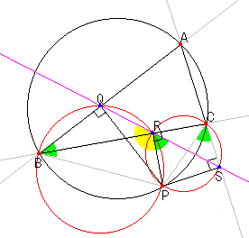

|
Point P is on a circumcircle of the triangle ABC.
PQ and AB, PR and BC, PS and CA cross perpendicularly. What do you observe about three point Q,R and S.
|
|
Since points C, S, P and R are on the same circle, angle PCS = angle SRP. Since points A, B, P and C are on the same circle, angle PBQ = angle PCS. Since points P, R, B and Q are on the same circle, angle PBQ + angle PRQ = 180 deg. . Therefore, angle SRP + angle PRQ = 180 deg. . |
 |